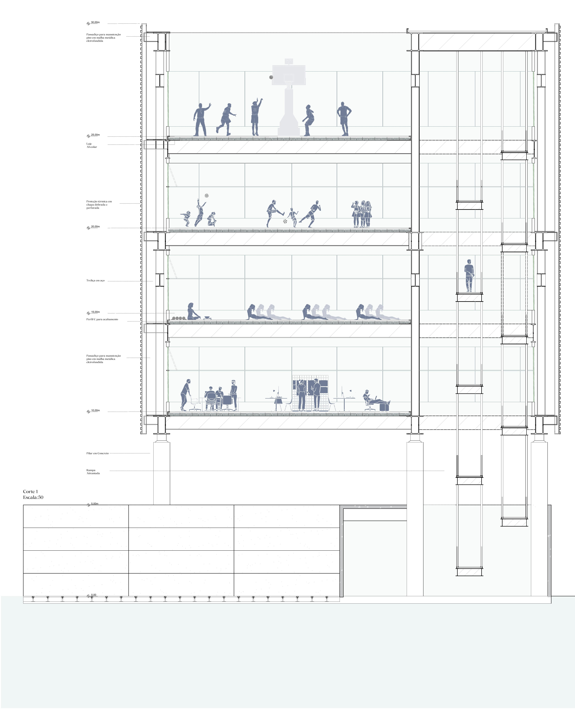
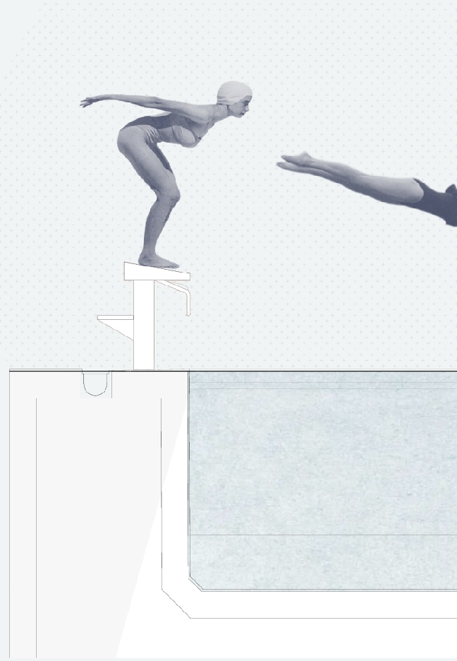

Centro Esportivo Três Rios
O projeto parte da necessidade de condensar um programa esportivo completo em um lote no bairro do Bom Retiro, em São Paulo. A solução adotada baseia-se em uma ocupação vertical, capaz de organizar usos distintos em uma estrutura compacta, articulada em torno de um elemento central: a piscina.
A implantação respeita o alinhamento da Rua Três Rios, estabelecendo um embasamento térreo com função de acolhimento e recepção dos usuários. A piscina, posicionada no primeiro pavimento, é o núcleo do edifício — visível a partir de todos os andares, atua como eixo visual e organizador dos fluxos internos.
A distribuição programática é sequencial: térreo: acesso e acolhimento; 1º pavimento: piscina coberta; 2º pavimento: Administração e operacional; 3º pavimento: espaços de ginástica; 4º e 5º pavimentos: quadras esportivas (coberta e descoberta, respectivamente).
A opção por elementos estruturais leves — como treliças metálicas e lajes alveolares — permite vencer grandes vãos e garantir a transparência visual entre os pavimentos.

A lógica de empilhamento programático responde diretamente à escassez de solo urbano e propõe um edifício que se relaciona com o entorno por meio de aberturas visuais, fluxos verticais e uma presença clara na paisagem construída do bairro.